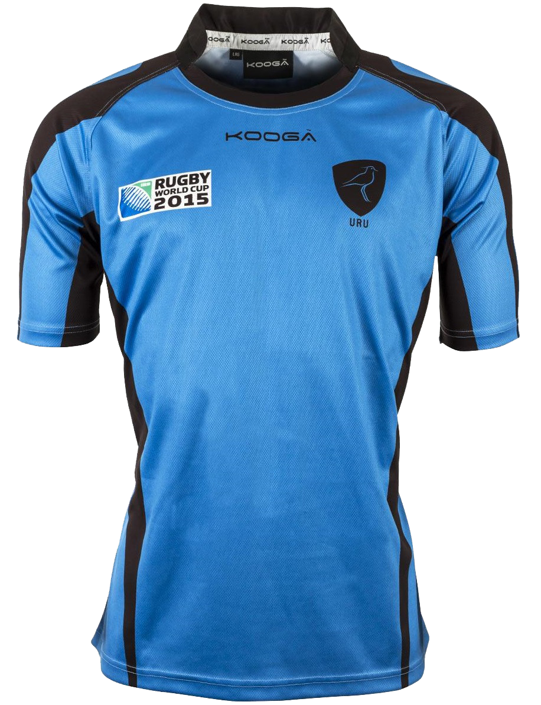

El desporte tradicional es rugby. El equipo de Uruguay se dice Los Teros. Los Teros es clasifica como el vigésimo en el mundo. Ellos ir al Copa del Mundo de Rugby tres tiempas, en 1999, en 2003, y en 2015.
